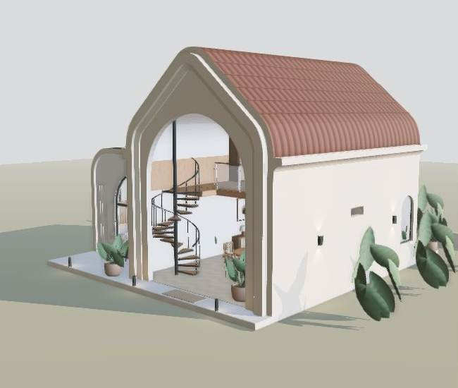

Opening the lightweight villa…
Curved roofs. Warm materials. A slower way to live.
Walls block forward movement. Vertical controls let you navigate between levels. This is an architectural explorer, not a full physics simulation.